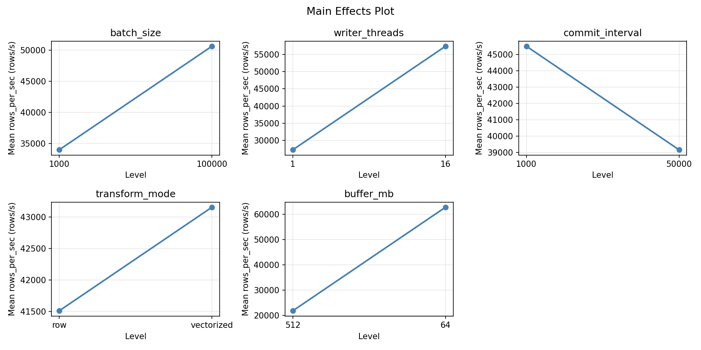
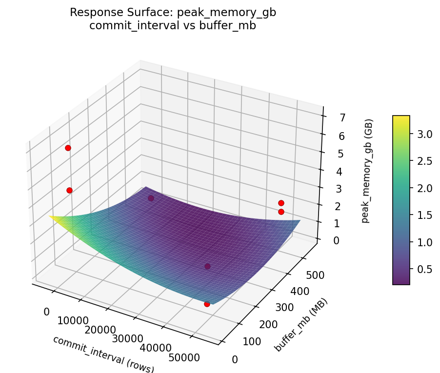
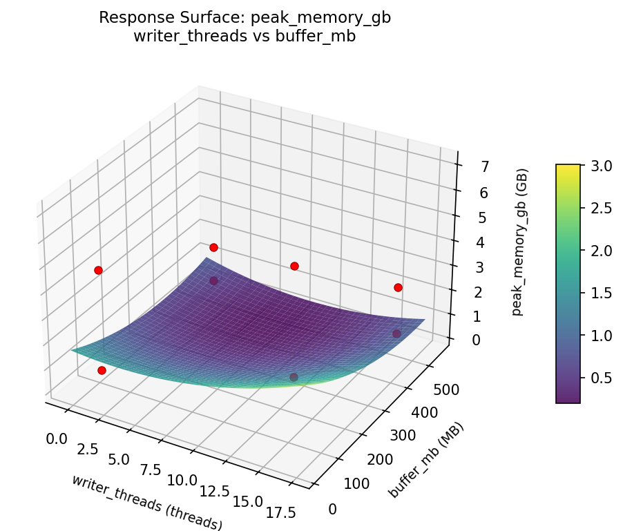
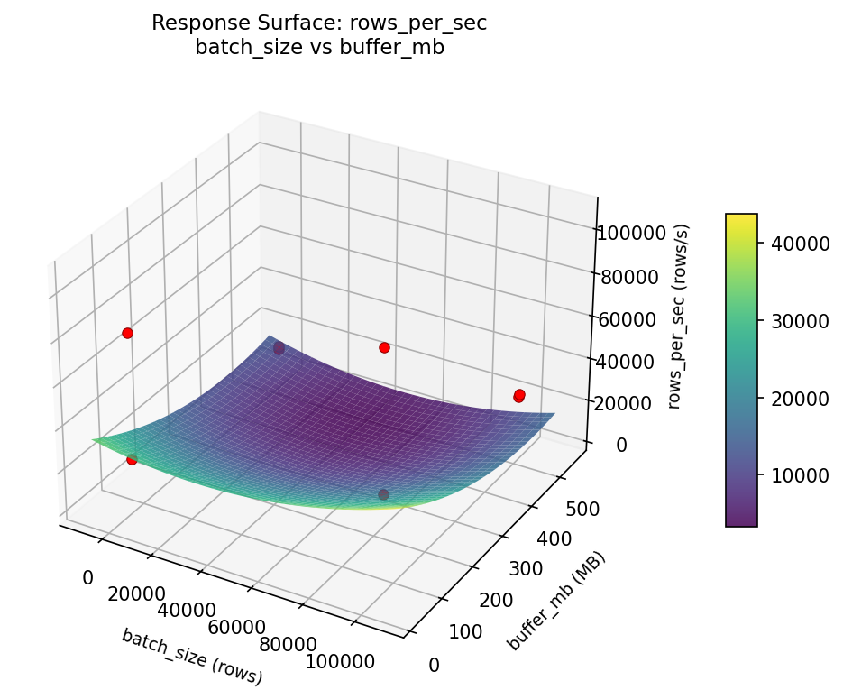
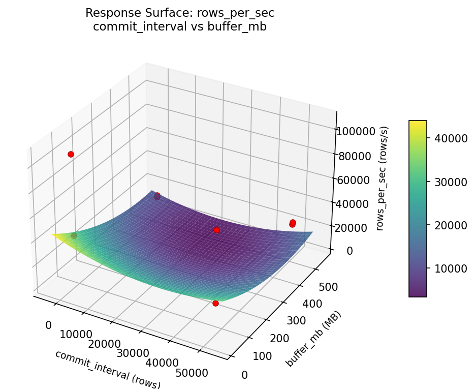
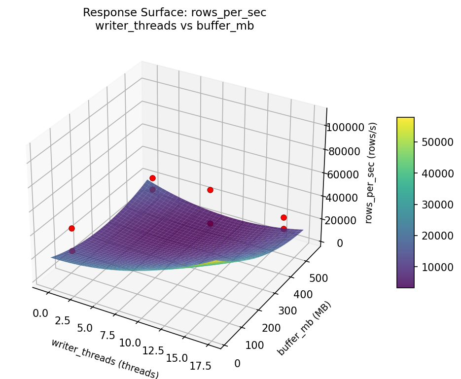
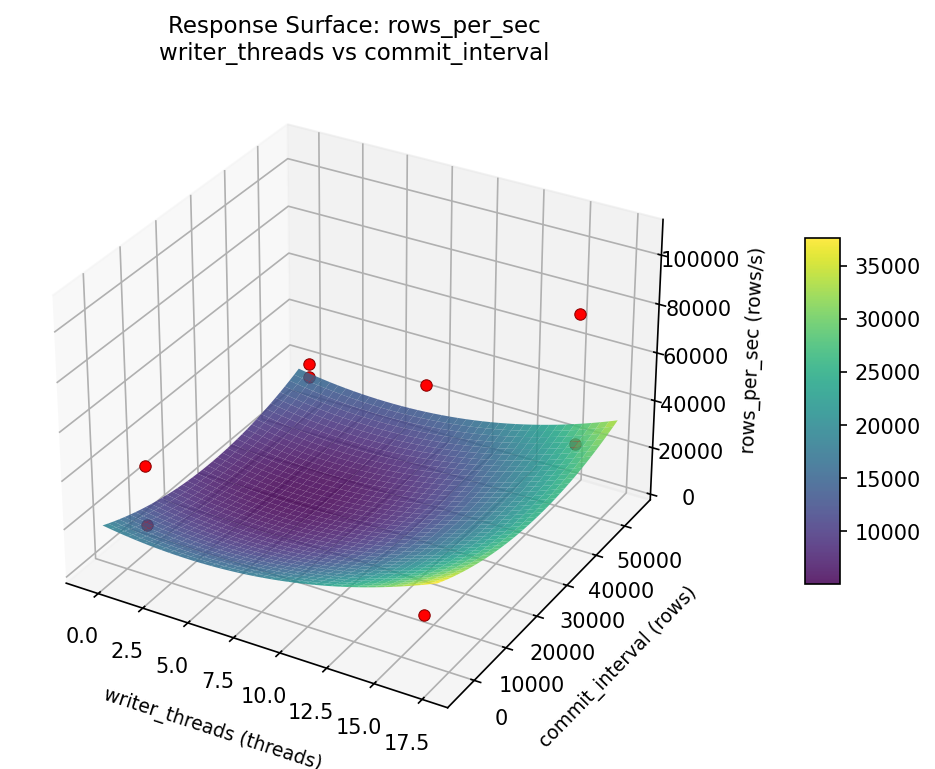

Experimental Setup
Factors
| Factor | Low | High | Unit |
|---|---|---|---|
batch_size | 1000 | 100000 | rows |
writer_threads | 1 | 16 | threads |
commit_interval | 1000 | 50000 | rows |
transform_mode | row | vectorized | |
buffer_mb | 64 | 512 | MB |
Fixed: source = postgresql, sink = s3_parquet
Responses
| Response | Direction | Unit |
|---|---|---|
rows_per_sec | ↑ maximize | rows/s |
peak_memory_gb | ↓ minimize | GB |
Configuration
Experimental Matrix
The Fractional Factorial Design produces 8 runs. Each row is one experiment with specific factor settings.
| Run | batch_size | writer_threads | commit_interval | transform_mode | buffer_mb |
|---|---|---|---|---|---|
| 1 | 1000 | 16 | 50000 | row | 64 |
| 2 | 100000 | 1 | 1000 | row | 64 |
| 3 | 100000 | 16 | 1000 | vectorized | 64 |
| 4 | 100000 | 16 | 50000 | vectorized | 512 |
| 5 | 1000 | 16 | 1000 | row | 512 |
| 6 | 100000 | 1 | 50000 | row | 512 |
| 7 | 1000 | 1 | 1000 | vectorized | 512 |
| 8 | 1000 | 1 | 50000 | vectorized | 64 |
Step-by-Step Workflow
Preview the design
Generate the runner script
Execute the experiments
Analyze results
Get optimization recommendations
Generate the HTML report
Features Exercised
| Feature | Value |
|---|---|
| Design type | fractional_factorial |
| Factor types | continuous (4), categorical (1) |
| Arg style | double-dash |
| Responses | 2 (rows_per_sec ↑, peak_memory_gb ↓) |
| Total runs | 8 |
Analysis Results
Generated from actual experiment runs using the DOE Helper Tool.
Response: rows_per_sec
Top factors: buffer_mb (38.6%), commit_interval (26.5%), batch_size (25.4%).
Pareto Chart

Main Effects Plot

Response: peak_memory_gb
Top factors: buffer_mb (46.1%), commit_interval (18.4%), transform_mode (18.4%).
Pareto Chart

Main Effects Plot

Response Surface Plots
3D surfaces fitted with quadratic RSM. Red dots are observed data points.
peak memory gb batch size vs buffer mb

peak memory gb batch size vs commit interval

peak memory gb batch size vs writer threads

peak memory gb commit interval vs buffer mb

peak memory gb writer threads vs buffer mb

peak memory gb writer threads vs commit interval

rows per sec batch size vs buffer mb

rows per sec batch size vs commit interval

rows per sec batch size vs writer threads

rows per sec commit interval vs buffer mb

rows per sec writer threads vs buffer mb

rows per sec writer threads vs commit interval
